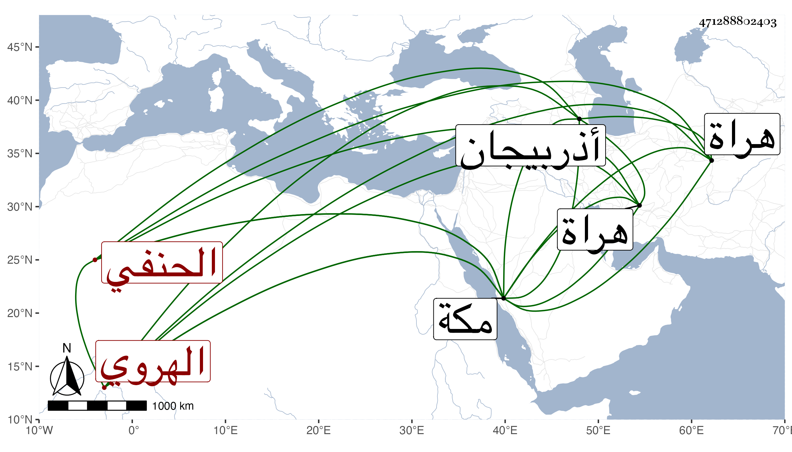

0902Sakhawi.DawLamic.ITO20230111-ara1.EIS1600.471288802403
Biography ID: 471288802403
13
طاهر بن محمد بن محمد بن محمد معز الدين بن العماد بن الغياث بن السيف الهروي الحنفي نزيل مكة . ولد في سنة اثنتين وأربعين وثمانمائة تقريبا بهراة ، ونشا بها فأخذ عن ملا محمد بن أمين الدين القوهستاني في المتون وغيرها والنظام عبد الرحيم الزباركاهي في العربية والمنطق والكمال حسين الهروي في المطول وحواشي السيد وشروح الطوالع والمطالع ، وابن أخي النظام المذكور الجلال أبي المكارم بن الشهاب عبد الله في كثير من الفنون مع الفقه ، ثم هاجر من بلاده فدخل أماكن كالعراق وأذربيجان واجتمع بفضلائها إلى أن وصل لمكة قريب التسعين فاجتمع عليه جماعة من الأغراب ثم انثنوا عنه وكان هو يحضر دروس القاضي البرهان ثم ولده ويبحث ، ولما وردتها في سنة ثلاث وتسعين قرأ علي في شرحي للأفية قطعة كبيرة ولازمني في غيرها واغتبط بي كثيرا ثم ترك الاشتغال وأقبل على الكتابة للاسترزاق فإنه تزوج ورزق بعض الأولاد مع عدم انقطاعه عن دروس القاضي بل قرأ على عبد المعطي المغربي عوارف السهروردي وغيرها وسمع عليه الرسالة القشيرية وغيرها وربما ألم بالشريف قاضي الحنابلة وعاد لإقراء الطلبة ، وبالجملة فله فضل ومشاركة ولكنه لطيف الحركة والعقل وربما خرج في أيام الحر ولبس الطرطور واللبد كان الله له .
